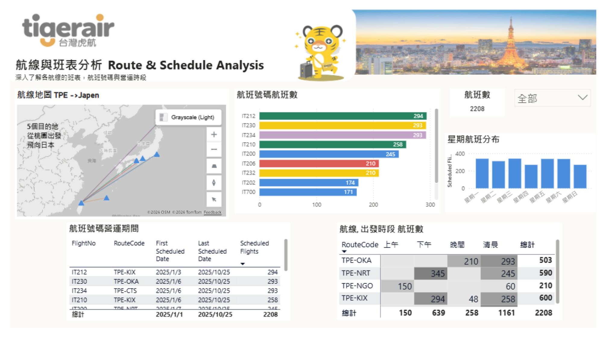

01 DATA ANALYTICS · FEATURED
Taiwan Tigerair Route & On-Time Performance Analysis
Exploring route schedules, flight frequency, punctuality performance, and weather-related operational risk across Taiwan–Japan routes.
- Focus
- Route & schedule analysis · On-time performance · Weather risk
- Current Status
- Weather Scenario Simulator is being refined for the next iteration.
- Tech Stack
- Power BI · DAX · Power Query · Data Visualization
